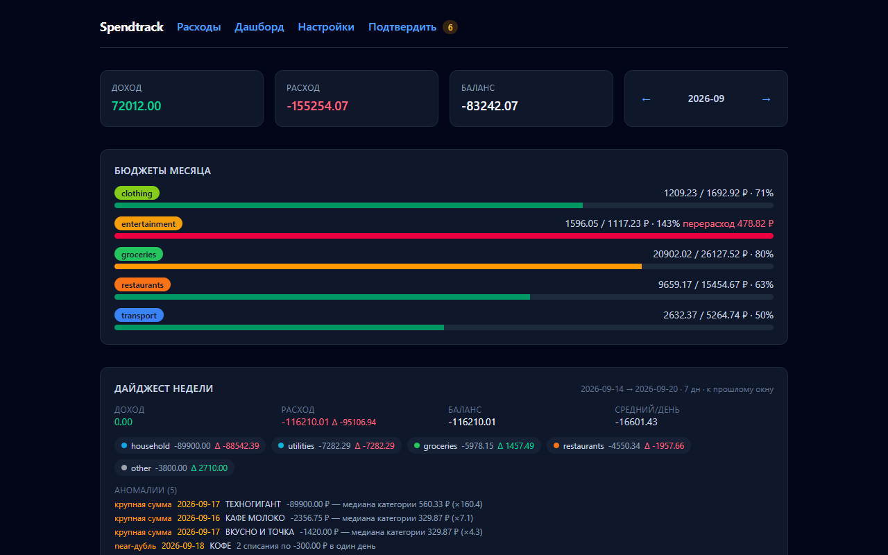
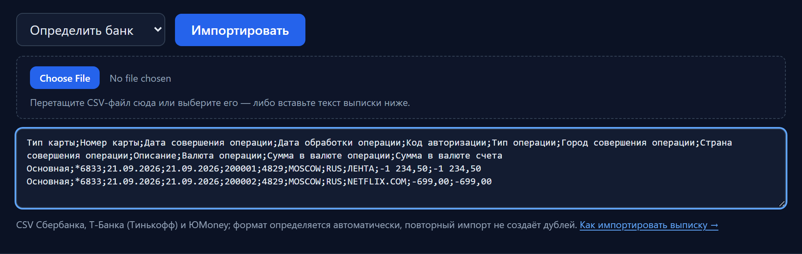
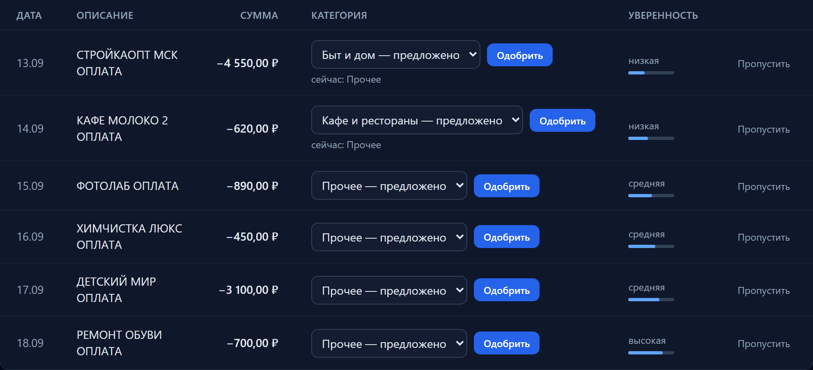
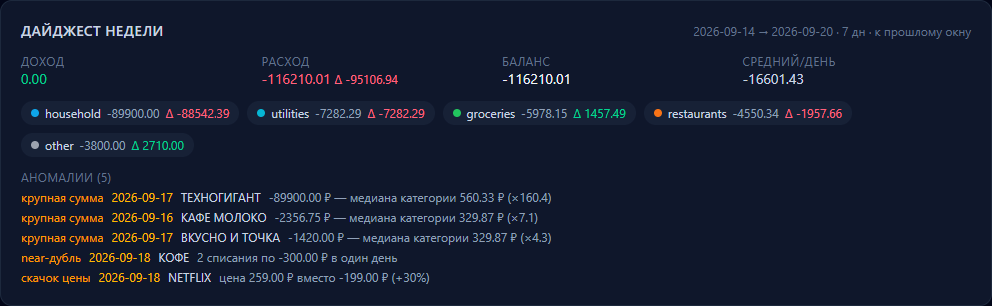

Учёт расходов по банковским выпискам — без облака
Загрузите CSV из Т-Банка (Тинькофф) или ЮMoney — Spendtrack разложит траты по категориям, покажет бюджеты и найдёт подорожавшие подписки. Всё работает на вашем компьютере, код открыт.
Для тех, кто ведёт бюджет в Excel или ZenMoney и не хочет отдавать выписки в чужое облако.
В демо — синтетические данные за ~5 месяцев; нужен аккаунт GitHub, порт приватный.

Что вы увидите через 10 минут
Три экрана — весь путь: выписка, разбор спорного, итоги недели.



Приватность — это не маркетинг, а поведение по умолчанию
Ноль сети без ключей
LLM выключен: приложение не делает сетевых вызовов — это проверяется автотестом «нулевой сети» в CI при каждом коммите.
Сервер — только localhost
По умолчанию слушает 127.0.0.1. Телеметрии и аналитики нет: приложение ничего не отправляет само. Анонимную сводку (doctor --share) можно отправить только вручную — по вашему явному действию.
Что уходит к LLM
Описание операции (≤300 символов), сумма, дата и псевдоним счёта (без номера карты), плюс до 8 примеров из ваших правок — и только если вы сами включили свой ключ или локальный Ollama. Бесплатные каналы (OpenRouter :free) — отдельный осознанный opt-in.
Честно: файл базы не шифруется — это ваш диск и ваша ответственность. Подробности: PRIVACY.md и SECURITY.md.
От установки до дайджеста — за 10 минут
Установщик сам поставит uv и Python 3.13. Никаких аккаунтов, ключей и облаков: приложение поднимается на 127.0.0.1.
Установите одной командой
Windows (PowerShell):
powershell -c "irm https://raw.githubusercontent.com/ExNihil14/spend-tracker/main/install.ps1 | iex"macOS / Linux / WSL:
curl -LsSf https://raw.githubusercontent.com/ExNihil14/spend-tracker/main/install.sh | shЗагрузите выписку
Перетащите файл выписки в веб-интерфейс (или вставьте CSV), либо импортируйте файл командой в терминале:
spendtrack import statement.csv --bank autoФормат определится сам. Уже загруженные операции повторно не добавятся.
Смотрите дайджест
Откройте http://127.0.0.1:8766 — или в терминале:
spendtrack digestКатегории, бюджеты, подписки и аномалии недели — без единого сетевого запроса.
Что внутри
Детерминированное ядро делает основную работу; LLM подключается только к остатку — и никогда по умолчанию.
Выписки без ручной правки
Т-Банк (Тинькофф), ЮMoney (Яндекс) и Сбер (там, где доступен CSV-экспорт): кодировки, разделители, десятичные запятые. Повторный импорт — no-op, пересекающиеся периоды не удваиваются.
Категории расставляются сами
Кэш мерчантов → keyword-правила → LLM → офлайн-правила. Авто-приём при уверенности ≥ 0.9, спорное — в очередь «Подтвердить».
Подписки и рекурринги
Регулярные списания находятся автоматически: цена, история, пропуски, скачок цены (например, подписка подорожала — увидите флаг).
Дайджест недели
Расход/доход и дельты, топ категорий, самый дорогой день, крупные суммы и возможные дубли — короткий отчёт вместо таблиц.
Бюджеты по категориям
Месячные лимиты с прогрессом; перерасход виден сразу. Доходы и переводы в бюджеты не попадают.
Данные у вас
Обычный файл SQLite на вашем диске, экспорт CSV/Excel одной кнопкой, бэкап с проверкой восстановления (doctor).
LLM предлагает, вы решаете
- Порог уверенности: ≥ 0.9 — категория принимается, ниже — уходит в очередь с предложением модели.
- Правка учит: ваше решение запоминается для мерчанта и попадает в примеры — LLM будет точнее в следующий раз.
- Подсказки правил: из ваших правок система предлагает keyword-правила, которые можно применить одним нажатием.
- Работает офлайн: без LLM очередь просто наполняется — приложение не делает ни одного сетевого вызова.
- Клавиатура:
j/k— строки,Enter— одобрить,s— пропустить,1–9— категория.
Демо за пару минут — без установки
Кнопка открывает ваш личный GitHub Codespace: приложение стартует само, внутри — синтетические данные за ~5 месяцев. Витринные фичи (подписки, аномалии, бюджеты, очередь) уже на месте.
Нужен аккаунт GitHub; порт приватный — приложение увидите только вы. GitHub Free даёт 120 core-часов в месяц, этого хватает на много запусков.
Поддержать проект
Ядро бесплатное и останется бесплатным: импорт, правила, бюджеты, дайджест, экспорт, BYO-LLM. Поддержка — для тех, кто хочет помочь разработке.
Разовая поддержка — скоро
- имя в README и CHANGELOG релиза — или анонимно
- приоритет внимания к вашим issue и предложениям
- ядро не урезается — это тот же продукт
Когда запустим — появится страница поддержки (разовый платёж и донаты Boosty). Почта — только для ответа о запуске; рассылок не будет.
Вопросы
Нужен ли API-ключ LLM?
Нет. По умолчанию LLM выключен, и приложение работает на правилах и кэше. Хотите точнее — подключите свой OpenAI-совместимый сервер (BYO) или локальный Ollama; можно и бесплатные каналы, но это чужие серверы — включаются осознанно.
Что будет, если импортировать один и тот же файл дважды?
Ничего лишнего: у каждой операции есть невидимый отпечаток, поэтому повторная загрузка распознаётся как дубликат. Пересекающиеся периоды не удваиваются — можно спокойно импортировать выписки заново.
Почему перевод между своими счетами не считается расходом?
Переводы исключены из расходов и бюджетов: деньги не покидают ваши счета. Приложение отдельно помечает такие операции, чтобы отчёты не были завышены.
Что уходит на сервер ИИ, если я его включу?
Описание операции (до 300 символов), сумма, дата и псевдоним счёта, плюс до 8 примеров из ваших правок — и только на сервер, который вы указали сами (свой ключ или локальный Ollama); бесплатные каналы — осознанный opt-in. Подробности — в PRIVACY.md.
Какие банки поддерживаются?
Т-Банк (Тинькофф), ЮMoney (Яндекс), а также Сбер там, где есть CSV-экспорт (у физлиц Сбер присылает CSV по e-mail не у всех — выписка в приложении идёт PDF). Если формат вашего банка изменился или его нет — пришлите обезличенный образец в issue: адаптеры сообщества — самый быстрый путь к поддержке нового банка.
Импорт не распознал мою выписку — что делать?
Скорее всего, у банка изменился формат. Импорт честно скажет, каких колонок не хватает, и не тронет базу. Пришлите обезличенный образец (5–10 строк) в issue: spendtrack anonymize выписка.csv заменит описания и номера карт псевдонимами; даты и суммы остаются как есть — просмотрите файл перед отправкой, issue публичный.
Это замена YNAB, ZenMoney или Firefly III?
Нет, и мы не делаем вид. Это узкий локальный инструмент под русские выписки: без bank sync, без мультиюзера и семейного бюджета, без мобильных приложений. Зато без облака, подписки и передачи данных на чужие серверы.
Что с моими данными при обновлении или удалении?
Данные лежат в пользовательской папке (Windows: %LOCALAPPDATA%\spendtrack, Linux/macOS: ~/.local/share/spendtrack; точный путь — spendtrack paths). Обновление: uv tool upgrade spendtrack (перед этим — spendtrack backup). Удаление: uv tool uninstall spendtrack — программа удалится, а данные останутся; удалить их можно вручную. Экспорт в CSV/Excel — в любой момент; spendtrack doctor проверит целостность и подскажет состояние бэкапов.
Как сообщить о баге или предложить фичу?
Через issue-шаблон: он попросит вывод spendtrack doctor (без ваших транзакций) и шаги воспроизведения. Личных данных для этого не требуется.
Дорожная карта
Что делать следующим: Telegram-бот или PWA?
Ввод трат с телефона — следующий большой шаг. Выберите канал, который вам важнее: голос — открытый issue, достаточно нажать «Submit».
Поставьте за 10 минут — данные останутся у вас
Одна команда, никаких аккаунтов и ключей: приложение поднимется на 127.0.0.1, выписки и база останутся на вашем диске.
Windows (PowerShell):
powershell -c "irm https://raw.githubusercontent.com/ExNihil14/spend-tracker/main/install.ps1 | iex"macOS / Linux / WSL:
curl -LsSf https://raw.githubusercontent.com/ExNihil14/spend-tracker/main/install.sh | shEnglish
Local-first personal expense tracker (FastAPI + SQLite + htmx). Import Russian bank CSV statements (T-Bank/Tinkoff and YooMoney/Yandex; Sber where CSV export is available): deterministic rule-based categorization with an optional bring-your-own LLM fallback, review queue, budgets, subscription detection and a weekly anomaly digest. Your data stays on your machine by default, the core works fully offline, and there is no cloud or telemetry. AGPLv3. See the README for quick start.